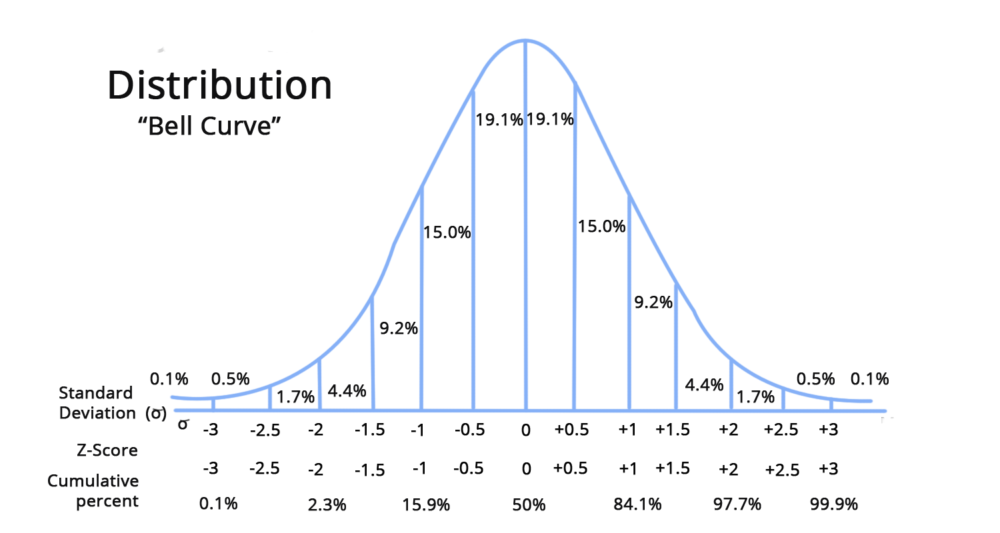

Learning Objectives
Introduction
Understanding the data in your research is the first step in the analytical path. Python - through Pandas, NumPy, and various plotting packages - provides an easy, interactive toolkit for viewing the underlying statistics and shape of data, both on their own (univariate) and against others (bivariate). As much as LLM tools can generate extensive code, having the skills to isolate, interrogate, and understand your data inside your research context is still a valuable skill.
The Proteomics Dataset
For this workflow we will be using a mouse proteomics dataset that contains the expression levels of 77 proteins from the cerebral cortex in both wild type (control) and trisomic (Down syndrome) mice. The dataset was made available by Higuera, C., Gardiner, K., & Cios, K. (2015): Mice Protein Expression.
1.
Before we delve into the new techniques, use the skills from the previous lesson to find out:
- The shape of the new dataset
- What columns there are
- What are their dtypes?
Exploring missing values
Before taking a look at the summary statistics of each column, you should always check for any missing values. Following the steps we demonstrated last lesson we can see that a few of them do have missing data.
As we have a lot of columns the full series of features can not be seen, however, using it as a boolean mask can allow us to pull out the columns with NaN values. Working this way, without any explicit naming of columns, just indexing, is the Pythonic way to write your code, once you automate. However, don't feel like an imposter if during data exploration you are copying and pasting column names into a filter!
Using one of the names from this list you can narrow down on the NaN values in specific features by using a combination of filtering with the .isnull() method:
From this subset, it can be seen that a few rows are missing some protein measurements, although not all.
Have a look at how the missing values are distributed across the rows by exploring a few different columns from nan_cols. Replace the empty brackets in the cell below with a column name from nan_cols (e.g. nan_cols[1], nan_cols[5]) to check whether the same rows are affected across different proteins.
Dropping all of the rows with NaN values almost reduces our dataset in half. For this reason, we will keep all the rows to retain the information for the features that are still present, dealing with any issues as they arise.
Univariate statistics
To gain a simple overview of your data, you can use the .describe() method, which will produce a set of summary statistics for any column that contains numerical data.
The describe method produces a new DataFrame (here assigned to description) that contains the number of samples, the mean, the standard deviation, 25th, 50th, 75th percentile, and the minimum and maximum values for each column of the data.
One thing worth noting immediately is that the count row is not uniform across all columns. For instance, BAD_N reports 867 observations and BCL2_N only 795, while SYP_N has the full 1080. This reflects the missing values identified earlier, as .describe() silently excludes NaN values from its calculations. The mean, standard deviation, and percentiles for those columns are therefore computed on a reduced sample, which is worth bearing in mind when comparing columns to one another.
Of note, the indices of the rows have now been replaced by strings, when previously we were used to integers. This can be an extension of the index column for any dataset, replacing uninformative numbers with descriptive strings.
To access a given row, use the .loc method. For example, in order to access the mean of the pCREB_N concentrations from the description:
Or all of the means:
2.
Using the description DataFrame:
- Extract all of the max values and find the largest one
- Use
.locto extract just theminandmaxrows for the first five protein columns.
Pandas Individual Statistics
The describe method can be useful in situations where you want a quick overview of your data, although in situations like we have here where there are many columns it can become quite cluttered. An alternative is to compute the statistics directly, using the specific methods for Pandas DataFrames.
These methods include .sum(), .mean(), .std(), .max(), .min(). Unlike .describe(), these methods do not filter out categorical columns automatically. Running .max() on the full DataFrame will not throw an error, instead it will return a mixed-type result with strings for the categorical columns and floats for the numerical ones, which is generally not what you want:
Instead, you should filter the dataset to only include numerical columns or columns of interest, which will return a Pandas series:
Likewise, you can call the statistical method on a singular column to get a single value. Or you can use the NumPy functions that were introduced in the previous lesson:
3.
In the previous lesson we introduced .value_counts() and .groupby() as tools for understanding categorical data. Use both to do the following:
- Find the distribution of the categories in the class feature.
- Find the mean, min, and max of each of the three provided proteins (
proteins), grouped by the class feature. - To do this, write a function that takes a DataFrame and a feature (protein) as arguments, and uses
.groupby()with.agg()to return the result. - Call the function 3 times with each feature
Outliers
Biological measurements are prone to extreme values, sometimes due to the variety seen in the measured system, but also from errors in the hardware measuring the event. It is therefore prudent to check for any values that are suspicious, removing them if you understand them to be aberrations, rather than biological fact.
This step can be a crucial one for machine learning, as the model will build its "understanding" of your phenomenon from all the measurements you give it for training. If some are incorrect, the models predictions will reflect this!
Looking back at the information from .describe() it is already noticeable that the first two columns have max values that are far larger than the 75% quartile boundary.
We will utilise the column ITSN1_N to explore two methods for identifying outliers:
Interquartile Range
The description DataFrame already provides us with the 25% (Q1) and 75% (Q3) quartile values — the points below which 25% and 75% of the data fall, respectively.
The difference between them is the interquartile range (IQR), which spans the middle 50% of the distribution. Values that fall more than 1.5 × IQR beyond either quartile are conventionally flagged as potential outliers:
$$\text{lower bound} = Q1 - 1.5 \times IQR$$
$$\text{upper bound} = Q3 + 1.5 \times IQR$$
It is suspected that the data's outliers are at the upper end due to the max values we pointed out earlier, therefore we will focus only on values above the upper boundary.
This method calculates there to be 44 values outside of the IQR, which is rather a lot. From this calculation we would likely leave them all in, as there are enough measurements above the threshold to signify it could be biologically true.
Z-score
A Z-score remaps each data point to the number of standard deviations it lies from the feature mean. For example, a value of 0 is the mean; +2 sits two standard deviations above it.
The formula is:
$$z = \frac{x - \mu}{\sigma}$$
where $x$ is the individual value, $\mu$ is the column mean, and $\sigma$ is the standard deviation.
A key assumption for the z-score is that the data be normally distributed (gaussian) or at least approximating it (bell-shaped). Gaussian distributions are symmetric around the mean with one peak, they can have differing variance (the width around the mean) and centre, but they must follow the shape seen below.
A standard (unit) normal distribution is a special case where the mean ($\mu$) is 0 and the standard deviation ($\sigma$) is 1.

A threshold of ±3 is the conventional cutoff, as under a normal distribution approximately 99.7% of values fall within three standard deviations of the mean. Anything beyond that is statistically unusual.
Z-score in Python
To calculate the Z-score we will import a the stats module from the Python package scipy, which is a common toolbox for all statistical functions in Python.
Scipy's Z-score
Comparing outliers
The two approaches catch different kinds of outliers and rest on different assumptions:
| IQR | Z-score | |
|---|---|---|
| Assumption | None (distribution-free) | Approximate normality |
| Sensitivity | Robust to skewed data | Can underestimate extremity in skewed distributions |
| Best suited for | Biological or heavily skewed measurements | Roughly normal data |
| Threshold | 1.5 × IQR (strict: 3 × IQR) | Typically ±3 |
This is partly reflected in the fact that the Z-score is influenced by the outliers themselves when computing the mean and standard deviation. Extreme values inflate and pull the mean upward, making themselves appear less extreme than they are.
For an ML pipeline, the choice matters. Some models are sensitive to feature scale and can be heavily distorted by outliers.
In this case the IQR method flagged 44 values while the Z-score approach flagged fewer — 15. Part of this gap comes from the Z-score being influenced by the very outliers you are using it to catch: extreme values pull the mean upwards, which shrinks the Z-score of the largest values and makes them appear less extreme than they are. This is not necessarily a bad thing here — 44 was arguably too many, and the Z-score still isolates several values with very large scores that are clear candidates for removal. The shrinking effect is felt most by the borderline values, which are the hardest to judge in most cases and are usually worth retaining.
However, as stated, Z-score assumes a normal distribution - something we have not checked for and one that could be affecting our result. To rectify this we will need to observe the shape and distribution of the data, which we will explore in next and third data transformation section.
Handling Outliers
Once identified, you have three main options:
Remove them — Drop the rows entirely. Appropriate when you have strong reason to believe the value is a measurement error (instrument failure, data entry mistake). Be cautious unless working with large datasets, as an extreme value may reflect genuine biology, not noise.
Clipping — Replace values beyond the threshold with the threshold value itself. This retains the row and all its other measurements while preventing the outlier from dominating. This is common in machine learning: you scale your data to a standard normal distribution, then clip the outliers to a threshold. This both controls the scale of the data and dampens the effect of extreme values.
Retain them with justification — If, as here, the elevated values cluster within specific experimental groups and the biological plausibility supports them, it is reasonable to keep them.
4.
Before removing anything from this dataset, it is worth checking whether the outliers (from ITSN1_N) cluster within particular categories. Use masking to select for values above the upper boundary and find their count .value_counts(), calculating the ratio of outliers across the categories of the class feature, using each method in turn:
- IQR
- Z-score
Summary & Quiz
In this section we took our first proper look at the proteomics dataset. We checked for missing values and learnt to pull out the affected columns with a boolean mask, then summarised each feature using .describe() and the individual Pandas statistics. Finally we explored two approaches to spotting outliers — the interquartile range and the Z-score — noting that the Z-score assumes roughly normal data and can mislead on skewed features. Whether to keep or remove those values is ultimately a judgement call, informed by biological context.
Summary & Quiz
Attempt the questions below once you have finished. If you get any wrong, head back to that section to remind yourself of the reasoning/syntax behind the correct answer:
Which expression returns only the columns of a DataFrame that contain at least one NaN value?
How does `.describe()` treat NaN values when computing its statistics?
What happens if you call `.max()` on a DataFrame containing both numeric and text columns?
Under the IQR rule, a value is flagged as a potential outlier if it lies beyond:
Why can the Z-score under-flag outliers in a right-skewed feature?